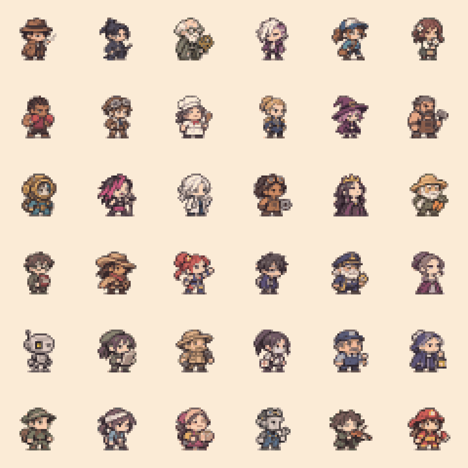
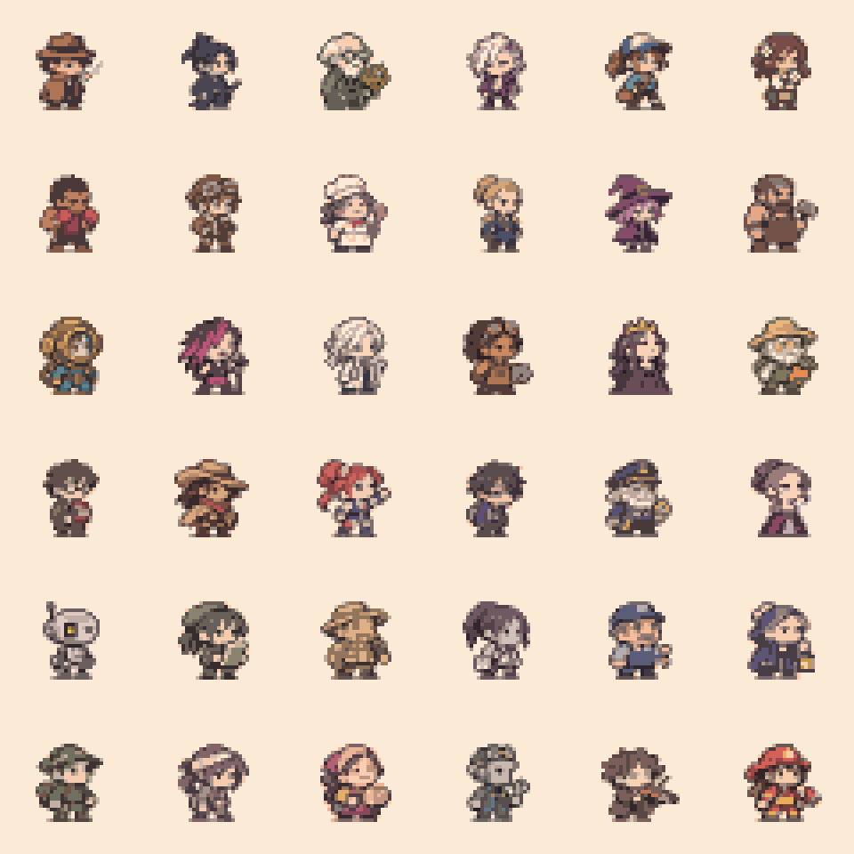

MINI36 · 离散扩散与像素簇清理 V2
36张独立全身小人，严格24×24，一个逻辑格一种颜色，透明度只有0/255。保留旧版全部素材。扩散网络恢复的是经过人工构造的离散噪声——没有资格替代画师重新安排五官的决定。下方的清理版使用了经过检验的保守限色与内部单点清理。
状态：待艺术验收，不是“完美像素”
30角色训练、6角色留出；8步、15个token的离散去噪模型。所有RGBA像素均在原生网格输出，无模糊和半像素。实验性的扩散提案另存，不会自动覆盖36张认可的概念底稿。




全部36个独立像素文件
本轮实际测试结果
载入真实训练报告...
“逐像素准确率”只衡量从合成噪声恢复原训练标签，不是美术审美指标。当前模型没有手工重绘的高质量标签，不能宣称自动生成了完美像素。